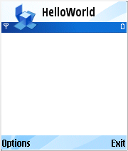
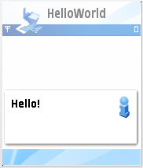
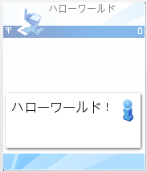
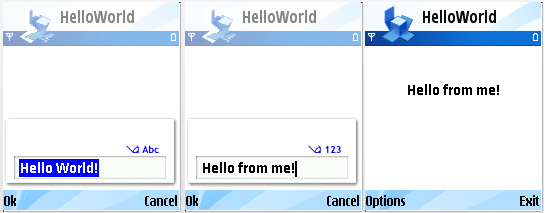

S60 5th Edition SDK
Example Applications Guide |
Hello World Basic Example
1. About this Example
2. Architecture
3. Design and Implementation
The Hello World Basic example demonstrates how to create a simple interactive application on Symbian OS. Although the program described here basically only displays a simple string, it can be easily adapted to make much larger applications.
Hello World Basic application - in addition to its evident purpose to print "Hello World!" to the screen - also demonstrates displaying text with Information Note and on to the background, loading strings with the help of StringLoader, writing to and reading from a file and use of dialog to inquire user input.
Furthermore, Hello World Basic application is also localized to a few different languages.
- StringLoader
- RFs, RFile, RFileWriteStream and RFileReadStream
- CAknInformationNote
- CAknTextQueryDialog
None.
HelloWorld follows traditional Symbian OS Control-based architecture.
Hello World application does not require any capabilities. The program capabilities are defined in helloworldbasic.mmp file: CAPABILITY NONE.
The program takes screen parameters in the start of the application and works with all screen modes. The program supports changing the screen layout while the program is running. Note that this support must be coded in the application and this code resides in the CHelloWorldBasicAppView::SizeChanged() method.
All the classes are derived from CBase. CBase has a number of useful features: it initialises all member data to zero, it has a virtual destructor, and it implements support for the Symbian OS cleanup stack.
This section explains the sequence of interactions that occur on the objects described in the last section when the application is run and the user selects the Hello menu option. The following sections describe the steps in more detail.
- The application is launched, the framework loads the application EXE and the E32Main() method implemented in helloworldbasic.cpp is called. Read more from 3.4.1 Creating the Application object.
- E32Main() method calls the function NewApplication(). This creates an instance of the HelloWorldApplication class, and returns a pointer to it. The framework subsequently uses this pointer to complete construction of the application.
- The framework calls virtual function AppDllUid() (implementation CHelloWorldBasicApplication::AppDllUid) to get the UID of this particular application. The UID is used to, for example, check if an instance of the application is already running, so than the existing instance can be switched to, rather than a new instance created. Read more from 3.4.2 Getting the application's UID.
- The framework calls virtual function CreateDocumentL on the CHelloWorldApplication object: CHelloWorldBasicApplication::CreateDocumentL. This creates an instance of the application Document and returns a pointer to it. This allows the framework to call certain Document methods directly. The Document object is constructed using the Symbian OS construction sequence, using the Document object's static method NewL. Read more from 3.4.3 Creating the Document object.
- The framework calls AppDllUid again, to see if it is necessary to load a file from the filing system. The HelloWorld example does not need to persist any information, and so does not have a file associated with it.
- The framework calls the Document object's CreateAppUiL method: CHelloWorldBasicDocument::CreateAppUiL. This creates the AppUI object and returns a pointer to it.
- The framework completes the construction of the AppUI object by calling its ConstructL method (CHelloWorldBasicAppUi::ConstructL). The fact the framework calls the AppUi object's constructor and ConstructL separately allows the framework to complete any necessary initialisation before construction of the AppUI object is completed. Read more from 3.4.4 Creating the AppUI and View objects.
- The CHelloWorldBasicAppUi::ConstructL method first calls the base class's BaseConstructL. This performs such tasks as reading the resource file associated with an application.
- The AppUi calls CHelloWorldBasicAppView::NewL to create the AppView object, using Symbian two phase construction.
- The framework calls the Draw (CHelloWorldBasicAppView::Draw) method to draw the view. In this case it will cause a blank screen to be displayed. Read more from 3.4.5 Redrawing the screen.

- Whenever the user selects a menu option, CHelloWorldBasicAppUi::HandleCommandL is called by the framework and is passed an argument, aCommand, that indicates the command the user selected. The AppUI can then perform whatever actions are required for that particular menu option:
- In case of "Hello", it creates an Information note with the text specified in resource file in it, and displays it.
- In case of "Hello from file", it reads text from Hello.txt -file and displays it in Information note.
- In case of "Hello from edit", it asks text from the user with a dialog and displays it on the screen.
It is important to note that the NewApplication method is exported by the EXE. This is achieved by adding the EXPORT_C directive before this function in the helloworldbasic.cpp file. If the EXPORT_C directive is missing, the code will fail to link.
The framework calls the function that is exported by the application at ordinal 1 in the DLL. This means that the first function defined in the DEF-file for an application must be the NewApplication method. By default, the tool chain automatically ensures that this is the case for a Symbian OS application.
Note that this construction does not use the usual Symbian OS new (ELeave) method, but the C++ style new method. This is because a TRAP harness has not been created for the application at this point. If the system is unable to allocate memory for a new instance of the application, the returned instance pointer will be NULL. The framework checks for, and copes with, this possibility.
AppDllUid which gets the application's UID must be present, or the application will fail to link.
The Application object is responsible for creating an instance of the Document object. However, it is not required to destroy it. Destruction of the Document object is performed by the framework.
Note that creation of the AppUi object does not use the Symbian OS two phase construction sequence. Instead the C++ constructor is called, and a pointer to the created instance is returned to the framework. The framework completes construction by calling ConstructL later. Ownership of the AppUI is passed to the framework, and so the Document object is not responsible for destroying it.
The Draw method is called by the framework when the view needs to be redrawn, and contains all the code necessary to draw the view for this application. Note that the framework only calls the Draw method in response to general system events. So, for example, the framework automatically calls Draw when the application is launched, when the Options menu disappears, and if the application regains focus.
The programmer cannot call the Draw method directly, as it requires the system's graphics context to be activated before it is called. Instead, if the programmer wishes to have the screen redrawn, they should call the DrawNow method.
Note that the Draw function cannot leave. This is because the function may be called directly by the framework, and the framework would not know how to handle any errors that might occur. Instead the Draw function must TRAP and handle any errors that might occur.
HandleCommandL is called on the AppUi object whenever the user selects a menu option. The argument aCommand indicates the command the user selected. HandleCommandL typically takes the form of a switch statement which invokes different actions according to the value of aCommand.
Handling command "Hello"
- string is loaded from the resource file with StringLoader
- Information note is shown from the descriptor

Handling command "Hello from file"
- connection to the file server is opened with RFs
- RFile is used to open "Hello.txt"-file for reading
- A RFileStream object is created from the file
- An HBufC descriptor is created from the RFileReadStream object
- The descriptor reads from the stream both the length of the data followed by the data. After this descriptor has been read the stream will be positioned at the beginning of the data.
- Information note is shown from the descriptor
- Note:
- "Hello.txt"-file, which is read during the execution of this command, is actually created by the application itself during the execution of CHelloWorldBasicAppUi::ConstructL. In other words, it is not an exported ready-made file. The reason for this is that HelloWorld is localized to different languages; and thus during start-up the file is created and the text is written into it with the current language.

Handling command "Hello from edit"
- a string is loaded from the resource file with StringLoader
- CHelloWorldQueryDialog is created and the loaded string is passed to it to be used as default value for input and also a descriptor is passed to store the input given by the user
- no other actions are made, but the text will be displayed in the screen, when the framework calls Draw .

If the application is required to respond to user keypresses, the AddToStackL method must be called by the AppUi object's ConstructL method, with the AppView object as an argument. This adds the AppView object to the control stack.
If the view is on the control stack, then whenever the user presses a key the OfferKeyEventL method is called. This has arguments that indicate the type of key event (key down, key press or key up) as well as the code of the key pressed.
When the AppUi object is destroyed, the AppView must be removed from the stack. This is done by calling RemoveFromStack in the AppUi object's destructor.
HelloWorld application is localized for English, Finnish, Chinese and Japanese. The "main" rls-file HelloWorldBasic.rls includes language specific rls-files, which all each define the same resource strings in specific language. The localized rls-files contain language id in their name (enum TLanguage in e32const.h specifies language identification values), for example: HelloWorldBasic_32.rls.
When localizing to languages, which do not use Western alphabets, such as Chinese or Japanese, a couple of additional steps needs to be taken. As the language cannot be written in ASCII, the language-specific rls-file has to
- be written in UTF-8 format, and
- contain a line CHARACTER_SET UTF8.
- Note:
- Certain editors add some "meta-bytes" into the beginning of file stored in UTF-format. Unfortunately Symbian's resource compiler RCOMP cannot deal with those additional bytes and resource file compilation will fail. It you encounter this, you have to remove those additional bytes with some other editor.
Furthermore, localization affects mmp- and pkg-files also:
- languages need to be defined in mmp-file. See LANG in HelloWorldBasic.mmp.
- languages need to be defined in pkg-files and language dependent resource files have to be listed. In addition, most of the strings (e.g. component name) are required to be localized for each defined language. See S60 SDK Help "Package file format" for more detailed information.
Additionally, HelloWorld application's pkg-files demonstrate two ways to install localized application:
- the language is determined during installation - and only the determined language is installed (the application's language does not change, even if the language in the phone is changed).
HelloWorldBasic_gcce.pkg is made in this fashion. - the language is determined during installation, but all the supported languages are installed. If the language in the phone changes, the language of the HelloWorld-application changes also, if it supports the new language (English otherwise).
HelloWorldBasic_armv5.pkg is made in this fashion.
|
© Nokia 2009 |

|